Direct-Mapped Cache Controller
Project Guide
What the project is, the ideas behind it, how the folder and every file fit together, how to run it, and how to read the report, its diagrams and its waveforms. Written to be read once from top to bottom, then used as a reference for the demo and the viva.
1. The project in one minute
A processor is very fast and main memory is slow. A cache is a small, fast memory in between that keeps copies of recently used data. This project builds the controller of such a cache in Verilog and proves, by simulation, that it works.
- What was built: a direct-mapped cache controller: 1 KB of data in 64 lines of 16 bytes, 32-bit addresses, read-only. It sits between a processor (our testbench) and a simulated main memory.
- What it does for every request: splits the address into tag / index / offset, checks the line, answers from the cache on a hit, or fetches the 16-byte block from memory on a miss, stores it, and then answers.
- How we know it is correct: unit tests for each module, a 12-test self-checking system testbench with an independent reference model, a 16-run regression, and bug-injection checks.
- What we measured: hit time (2 cycles), miss penalty (
L + 5cycles for memory latencyL), hit rate and average memory access time (AMAT) for five access patterns, and a hardware cost estimate from Yosys (635 LUT4, 487 flip-flops, 18 block RAMs). - What it is not: not run on real hardware (no FPGA), and the cache is read-only (writes return an error).
2. Fundamentals
The ideas you need. Each one is used later in the code or the report.
2.1 Memory hierarchy and locality
Fast memory is small and expensive; big memory is slow and cheap. Computers stack them: registers → cache → main memory (DRAM) → disk. Each level keeps a copy of the most useful part of the level below. The gap between processor speed and memory speed (the “memory wall”) is the reason caches exist.
A cache works because programs are predictable. This is called locality:
| Kind | Meaning | Example | Where you see it here |
|---|---|---|---|
| Temporal locality | Data used now will probably be used again soon. | A loop counter, a hot function. | Test 2 and the repeated workload: one miss, then hits. |
| Spatial locality | Data near what you just used will probably be used soon. | Walking through an array. | Test 3 and the sequential workload: a miss brings in 4 words, the next 3 hit. |
2.2 Cache vocabulary
| Term | Plain meaning | In this project |
|---|---|---|
| Block / line | The chunk copied between memory and cache. One cache line holds one block. | 16 bytes = 4 words; 64 lines |
| Tag | High address bits stored with a line. They say which memory block is in the line. | 22 bits |
| Index | Address bits that choose the line. | 6 bits (26 = 64 lines) |
| Offset | Address bits that choose the byte inside the block. | 4 bits (24 = 16 bytes); bits [3:2] choose the word |
| Valid bit | 1 = the line holds real data. After reset all are 0, so leftover garbage is never used. | 64 flip-flops |
| Hit / miss | Found in the cache / not found. | hit = valid && tag matches |
| Refill | Writing the fetched block, its tag and valid bit into a line. | FSM state REFILL |
| Hit time | Cycles to answer a hit. | 2 |
| Miss penalty | The extra cycles a miss costs on top of a hit. | L + 5 |
| Memory latency L | Cycles main memory needs to return a block after accepting a request. | 1, 2, 4, 8, 16 tested |
2.3 Direct mapping and the address
In a direct-mapped cache every memory block can live in exactly one line, chosen by the index bits. Lookup is therefore simple and fast: read one line, compare one tag. (A 2-way cache has two possible lines per block, so it needs two comparisons and a replacement rule.)
Every 32-bit byte address is cut into three fields:
As formulas, with block size B = 16 bytes and N = 64 lines:
Worked example. Address 0x44 = 68: offset = 68 mod 16 = 4 (word 1 of the block), index = 4, tag = 0. The block starts at 0x40. Address 0x444 has the same index and offset but tag = 1, so 0x44 and 0x444 compete for line 4. Addresses exactly 1024 bytes apart always collide.
2.4 Hit, miss and conflict
There are three reasons for a miss, and the workloads were chosen to show them:
| Type | Cause | Shown by |
|---|---|---|
| Compulsory | First ever access to a block. Unavoidable on an empty cache. | repeated workload: its only misses are 4 compulsory ones. |
| Capacity | Working set bigger than the cache. | random over 64 KB with a 1 KB cache: 98.6% misses. |
| Conflict | Two blocks map to the same line even though other lines are free. | Test 4 / 12 and the conflict workload: 0% hits with 63 lines unused. |
2.5 Average memory access time (AMAT)
The miss penalty must be the extra time of a miss. If you used the whole miss time you would count the lookup twice. Equivalent form: AMAT = h·th + m·tm where h + m = 1.
Timing measured in this design (counting clock edges from the accept edge to the edge where the response is seen):
2.6 Digital design basics used here
- Clock. Everything changes on the rising edge of
clk. One “cycle” = one clock period (10 ns in our waveforms). - Synchronous logic / reset. Registers (flip-flops) copy their input on the clock edge.
rst_nis an active-low synchronous reset: when it is 0 at a clock edge, registers go to their starting values. - Combinational logic has no memory: outputs follow inputs at once (
tag_comparator,hit_miss_unit). Sequential logic has state (the FSM, the RAMs). - FSM (finite-state machine). A set of states and rules for moving between them. Ours has 6 states and handles one request at a time.
- Valid/ready handshake. The sender raises
valid, the receiver raisesready; the transfer happens on the clock edge where both are 1. This guarantees a request is neither lost nor taken twice. Our CPU side:req_valid/req_ready; memory side:mem_req_valid/mem_req_ready. - Synchronous-read RAM. You give the address on one edge and the data appears on the next edge. That is why the FSM has a separate
LOOKUPstate.
2.7 Verilog, simulation and synthesis
- Verilog describes hardware. RTL (register-transfer level) is the style that can be turned into real gates.
- Synthesizable code (
rtl/) can become hardware. Simulation-only code (testbench/) uses things like delays, files and$displayand only runs in a simulator. We keep the two apart on purpose. - Icarus Verilog (
iverilogcompiles,vvpruns) is the simulator: free, small, scriptable. It also writes the waveform file. - Yosys is the synthesis tool: it turns the RTL into basic cells and counts them. This gives a software estimate of cost. It is not the same as measuring a real FPGA.
- GTKWave is a viewer for waveform files.
2.8 How we prove it works
| Idea | Meaning | Where |
|---|---|---|
| Self-checking testbench | The testbench decides PASS/FAIL itself and exits with an error code on failure. No eyeballing. | tb_cache_controller.v |
| Reference (golden) model | A separate, simple model that knows the right answer: what word is at address X, and whether the cache should hit. | reference_memory.v, model inside the monitor |
| Monitor | Watches every request and response and compares with the reference automatically. | monitor block in the testbench |
| Directed tests | Hand-written scenarios with an exact expectation (cold miss, conflict, reset …). | tests T1–T12 |
| Random test | Thousands of seeded random requests; every result still compared with the models. The seed makes it repeatable. | T10 |
| Unit tests | Test one module alone, so a failure points at one place. | tb_<module>.v |
| Regression | Run everything again across many settings (latencies, back-pressure, seeds). | make regression, 16 runs |
| Mutation / bug injection | Break the design on purpose and check that the tests notice. A test suite that never fails proves little. | 12 of 13 injected bugs caught by system tests (the 13th is invisible there; a unit test catches it) |
2.9 Waveforms and VCD
A waveform is a plot of signals against time. The simulator writes it to a VCD (Value Change Dump) text file; GTKWave and our Python script both read it. A VCD stores only changes:
$timescale 1ps $end
$scope module tb_cache_controller $end
$var wire 1 ! clk $end
$var wire 1 " req_valid $end
...
$enddefinitions $end
#0
0!
#5000
1!
#10000
0!
1"
# a line like '1!' means: signal with id ! became 1 at the time given by the last #time lineIn every waveform figure: the top row is the clock, req_valid/req_ready are the CPU handshake, FSM state shows which state the controller is in, mem_req_valid/mem_resp_valid are the memory handshake, and resp_valid/resp_hit are the answer.
3. Workflow: from idea to report
Every step has one command. They run in this order.
rtl/make compilelint + Yosys elaboration check
make test4 unit tests + 12 system tests
make regression16 runs
make wave TEST=…make waveformsmake perfhit rate, AMAT
make synthYosys estimate
make diagramsmake report| Command | What happens | What it produces |
|---|---|---|
make compile | Compiles all RTL and testbenches with warnings on; Yosys elaborates the RTL and checks for loops/latches. | pass/fail only |
make test [LAT=4] | Runs the 4 unit testbenches and the 12-test system testbench once. | console summary; simulation/logs/tb_cache_lat4.log (expected vs actual per test) |
make regression | Unit tests plus the system testbench at latency 1/2/4/8/16, memory back-pressure of 1 and 3 cycles, and 3 extra random seeds. | simulation/logs/regression_summary.txt: “16 of 16 runs passed” |
make wave TEST=conflict | Runs one test and keeps the complete VCD. make wave alone lists test names. | simulation/waveforms/<test>_lat4.vcd (open with GTKWave) |
make perf | Generates 5 access traces, replays each through the RTL at 4 latencies, computes hit rate and AMAT, checks the formula against the measured average latency. | docs/perf_results.md, docs/performance.csv, docs/images/hit_miss_rate.png, amat_vs_latency.png |
make synth | Runs four Yosys flows (generic/iCE40, flat/hierarchical) and summarises the counts. | synth/*_stat.txt, synth/SUMMARY.md |
make diagrams | Compiles diagrams/*.tex (TikZ) to SVG, PNG and PDF. | diagrams/*.svg, *.png, report/figures/*.pdf |
make waveforms | Runs selected tests and draws timing diagrams from their VCD files. | docs/images/wave_*.png, report/figures/wave_*.pdf |
make report | Builds the IEEE report with pdflatex (three passes). | report/IEEE_Report_Final.pdf |
make all | All of the above in order. | everything |
make clean | Removes generated logs, VCDs and binaries. | – |
brew install icarus-verilog yosys · optional brew install --cask gtkwave · optional python3 -m venv .venv && .venv/bin/pip install matplotlib pymupdf (plots and diagrams) · pdflatex for the report (install the class with tlmgr --usermode install ieeetran).3.1 Life of one request (what the hardware does, cycle by cycle)
Take a hit first. E0 is the clock edge where the request is accepted.
| Edge | FSM moves | What happens |
|---|---|---|
| E0 | IDLE → LOOKUP | req_valid and req_ready are both 1: request accepted. The address is latched. The three arrays (valid, tag, data) start reading line index. |
| E1 | LOOKUP → COMPLETE | Array outputs are ready. The tag comparator and hit/miss unit say hit. |
| E2 | COMPLETE → IDLE | resp_valid is seen: latency = 2 cycles. The word selected by offset bits [3:2] is on resp_rdata. |
A miss (memory latency L):
| Edge | FSM moves | What happens |
|---|---|---|
| E0 | IDLE → LOOKUP | Accepted, arrays read. |
| E1 | LOOKUP → MISS_REQ | Valid is 0 or tags differ: miss. |
| E2 | MISS_REQ → WAIT_MEM | One start pulse goes to the memory interface with the block-aligned address. |
| E3… | WAIT_MEM | Interface holds mem_req_valid until memory accepts, then waits L cycles. |
| E(4+L) | – | The 128-bit block arrives and is captured; done is raised. |
| E(5+L) | WAIT_MEM → REFILL | Controller sees done. |
| E(6+L) | REFILL → COMPLETE | Data, tag and valid bit are written into the line. |
| E(7+L) | COMPLETE → IDLE | Response seen: latency = L + 7. The word comes from the block register, so no second RAM read is needed. |
A bad request (misaligned address, address ≥ 64 KB, or a write) goes IDLE → COMPLETE and answers with resp_err = 1 in 1 cycle; it is not counted as a hit or a miss.
4. Folder map: what every file is for
rtl/ = what would become hardware. testbench/ = what proves it. scripts/ = what runs and measures it. docs/, diagrams/, report/ = what explains it. simulation/ and synth/ = what the tools produced.5. RTL code walkthrough
Every snippet below is copied from the real file. Read them in this order: decoder → storage → comparator → hit/miss → memory interface → controller.
5.1 address_decoder.v: cut the address into fields
module address_decoder #(
parameter ADDR_WIDTH = 32,
parameter CACHE_BYTES = 1024,
parameter BLOCK_BYTES = 16,
// derived (do not override)
parameter NUM_LINES = CACHE_BYTES / BLOCK_BYTES,
parameter OFFSET_W = $clog2(BLOCK_BYTES),
parameter INDEX_W = $clog2(NUM_LINES),
parameter TAG_W = ADDR_WIDTH - INDEX_W - OFFSET_Wassign offset = addr[OFFSET_W-1:0];
assign index = addr[OFFSET_W +: INDEX_W];
assign tag = addr[OFFSET_W + INDEX_W +: TAG_W];
assign block_addr = {addr[ADDR_WIDTH-1:OFFSET_W], {OFFSET_W{1'b0}}};What it does. Pure wiring. offset is the lowest bits, index the next bits, tag the rest. block_addr is the address with the offset cleared (the start of the 16-byte block), which is what memory is asked for on a miss.
Why it is parameter-driven. The widths come from CACHE_BYTES and BLOCK_BYTES through $clog2, so changing the cache size changes every width automatically. A generate check in the file refuses to elaborate if sizes are not powers of two. It is tested with a second geometry (2 KB, 32-byte blocks).
5.2 Storage: valid, tag and data
cache_valid_ram.v
reg [NUM_LINES-1:0] valid;
always @(posedge clk) begin
if (!rst_n) begin
valid <= {NUM_LINES{1'b0}};
rd_valid <= 1'b0;
end else begin
if (wr_en) valid[wr_index] <= wr_valid;
if (rd_en) rd_valid <= valid[rd_index];
end
endValid bits are flip-flops, not a RAM, because they must all become 0 in one cycle on reset (valid <= 0 for all 64). A RAM cannot be cleared that fast. That is exactly how “an old tag can never cause a hit after reset” is guaranteed. Reads are registered (rd_valid appears one edge after rd_en), like the other arrays.
cache_tag_ram.v
reg [TAG_W-1:0] mem [0:NUM_LINES-1];
always @(posedge clk) begin
if (wr_en) mem[wr_index] <= wr_tag;
if (rd_en) rd_tag <= mem[rd_index];
endA plain memory of 64 tags. Write on refill, read at the accept edge. It has no reset: its contents are meaningless until the valid bit is 1, and that is the whole point of the valid bit.
cache_data_ram.v
genvar g;
generate
for (g = 0; g < BLOCK_BYTES; g = g + 1) begin : lane
reg [7:0] mem [0:NUM_LINES-1];
reg [7:0] q;
always @(posedge clk) begin
if (wr_en && wr_mask[g]) mem[wr_index] <= wr_data[8*g +: 8];
if (rd_en) q <= mem[rd_index];
end
assign rd_data[8*g +: 8] = q;
end
endgenerateThe 128-bit line is built from 16 small RAMs, one per byte (generate loop). Each lane has one write port and one read port, with a write enable = wr_en && wr_mask[g]. The mask allows byte writes later (for a write policy); for refills it is all ones.
5.3 tag_comparator.v and hit_miss_unit.v: the hit decision
assign match = (stored_tag == request_tag);
endmodulemodule hit_miss_unit (
input wire valid, // valid bit of the selected line
input wire tag_match, // from tag_comparator
output wire hit,
output wire miss
);
assign hit = valid & tag_match;
assign miss = ~hit;
endmoduleTwo tiny modules, one decision. The comparator only asks “are the tags equal?”. The hit/miss unit adds the valid bit: hit = valid AND tag_match. An invalid line is a miss even if its stale tag happens to match. Both are combinational (no clock). Each has its own unit test; the hit/miss unit's test is a complete 4-row truth table.
These two modules were split out of the controller to mirror how the reference cache projects are organized and to make the most important line in the design testable on its own.
5.4 main_memory_interface.v: talk to memory
localparam [1:0] M_IDLE = 2'd0, M_REQ = 2'd1, M_WAIT = 2'd2;
reg [1:0] mstate;
reg [ADDR_WIDTH-1:0] addr_q;
assign mem_req_valid = (mstate == M_REQ);
assign mem_req_addr = addr_q;
always @(posedge clk) begin
if (!rst_n) begin
mstate <= M_IDLE;
addr_q <= {ADDR_WIDTH{1'b0}};
done <= 1'b0;
blk_data <= {BLOCK_BYTES*8{1'b0}};
end else begin
done <= 1'b0;
case (mstate)
M_IDLE: if (start) begin
addr_q <= blk_addr;
mstate <= M_REQ;
end
M_REQ: if (mem_req_ready) mstate <= M_WAIT;
M_WAIT: if (mem_resp_valid) begin
blk_data <= mem_resp_data;
done <= 1'b1;
mstate <= M_IDLE;
end
default: mstate <= M_IDLE;
endcase
end
endA tiny 3-state machine so the cache FSM never touches raw memory signals. M_IDLE: wait for start, remember the block address. M_REQ: hold mem_req_valid = 1 with a stable address until memory says mem_req_ready (so a busy memory cannot lose the request). M_WAIT: wait for mem_resp_valid, capture the 128-bit block into blk_data and raise done for one cycle.
Because of this wrapper, the memory model can be swapped for any other module with the same ports without changing the cache.
5.5 cache_controller.v: the top level
Accepting a request
assign req_ready = (state == S_IDLE);
wire accept = req_valid && req_ready;
wire req_bad = (req_addr[1:0] != 2'b00) || (req_addr >= MEM_BYTES) || req_we;
req_ready is high only in IDLE. A request is accepted on the edge where req_valid and req_ready are both 1 (accept). req_bad flags a misaligned address (low 2 bits non-zero), an address outside memory, or a write: those get an error response instead of a lookup.
Reading the three arrays at the accept edge
cache_data_ram #(.NUM_LINES(NUM_LINES), .BLOCK_BYTES(BLOCK_BYTES)) u_data (
.clk(clk), .rd_en(accept), .rd_index(live_index), .rd_data(rd_block),
.wr_en(refill_en), .wr_index(q_index), .wr_data(refill_block),
.wr_mask({BLOCK_BYTES{1'b1}}));
cache_tag_ram #(.NUM_LINES(NUM_LINES), .TAG_W(TAG_W)) u_tag (
.clk(clk), .rd_en(accept), .rd_index(live_index), .rd_tag(rd_tag),
.wr_en(refill_en), .wr_index(q_index), .wr_tag(q_tag));
cache_valid_ram #(.NUM_LINES(NUM_LINES)) u_valid (
.clk(clk), .rst_n(rst_n), .rd_en(accept), .rd_index(live_index), .rd_valid(rd_valid),
.wr_en(refill_en), .wr_index(q_index), .wr_valid(1'b1));
All three arrays are read with the live request index in the same cycle as accept, so tag, valid and data are ready one cycle later, in LOOKUP. Writes happen only in REFILL (refill_en), using the latched address (q_index, q_tag) and the block captured by the memory interface (refill_block). That is why a request can safely change req_addr after it is accepted.
The hit decision
wire tag_match, hit, miss;
tag_comparator #(.TAG_W(TAG_W)) u_cmp (.stored_tag(rd_tag), .request_tag(q_tag), .match(tag_match));
hit_miss_unit u_hm (.valid(rd_valid), .tag_match(tag_match), .hit(hit), .miss(miss));
The two small modules are wired in series: stored tag → comparator → hit/miss unit. hit and miss feed the FSM and the counters.
The FSM (next-state logic)
always @(*) begin
next_state = state;
case (state)
S_IDLE: if (accept) next_state = req_bad ? S_COMPLETE : S_LOOKUP;
S_LOOKUP: next_state = hit ? S_COMPLETE : S_MISS_REQ;
S_MISS_REQ: next_state = S_WAIT_MEM;
S_WAIT_MEM: if (mem_done) next_state = S_REFILL;
S_REFILL: next_state = S_COMPLETE;
S_COMPLETE: next_state = S_IDLE;
default: next_state = S_IDLE;
endcase
end
This is the whole control flow. IDLE leaves on accept (to COMPLETE directly for a bad request). LOOKUP goes to COMPLETE on a hit and to MISS_REQ on a miss. MISS_REQ lasts one cycle. WAIT_MEM stays until mem_done. REFILL and COMPLETE last one cycle. The default branch returns to IDLE so no state is undefined, and no latch is inferred (checked by Yosys check -assert).
The response
wire [BLOCK_BITS-1:0] src_block = hit_q ? rd_block : refill_block;
wire [OFFSET_W-3:0] word_sel = q_off[OFFSET_W-1:2];
assign resp_valid = (state == S_COMPLETE);
assign resp_err = resp_valid && err_q;
assign resp_hit = resp_valid && hit_q && !err_q;
assign resp_rdata = (resp_valid && !err_q) ? src_block[32*word_sel +: 32] : 32'd0;
resp_valid is high only in COMPLETE, so there is exactly one response pulse per accepted request. On a hit the 128-bit line comes from the data RAM read register; on a miss it comes straight from the refill block register. word_sel (offset bits [3:2]) picks one of the four 32-bit words. Error responses return 0.
Statistics counters
stat_cycles <= stat_cycles + 1;
if (accept) stat_requests <= stat_requests + 1;
if (state == S_LOOKUP && hit) stat_hits <= stat_hits + 1;
if (state == S_LOOKUP && miss) stat_misses <= stat_misses + 1;
if (mem_start) stat_mem_reads <= stat_mem_reads + 1;
if (resp_valid) stat_completed <= stat_completed + 1;
// memory-wait: every cycle from MISS_REQ until the block arrives
if (state == S_MISS_REQ || state == S_WAIT_MEM)
stat_mem_wait_cycles <= stat_mem_wait_cycles + 1;Seven 32-bit counters (requests, hits, misses, memory reads, completed, cycles, memory-wait cycles) count what the hardware actually did. The testbench compares them with its own counts after every test. They cost about half of the flip-flops, so a production design would make them optional.
6. Testbench and scripts walkthrough
6.1 The fake memory and the golden model
function [7:0] init_byte(input [31:0] i);
init_byte = (i * 8'd167) + (i >> 8) * 8'd13 + 8'h5A;
endfunctionmem_init.vh defines what byte lives at every address. It is included by both the memory model and the reference model, so they start identical, and every byte differs from its neighbours. If the cache returns the wrong block, word or byte, the data mismatch shows it immediately.
assign mem_req_ready = !busy && (wait_cnt >= ACCEPT_DELAY);
always @(posedge clk) begin
mem_resp_valid <= 1'b0;
if (!rst_n) begin
busy <= 1'b0; cnt <= 0; wait_cnt <= 0;
end else if (mem_req_valid && mem_req_ready) begin
busy <= 1'b1; cnt <= LATENCY; addr_q <= mem_req_addr; wait_cnt <= 0;
end else if (!busy && mem_req_valid) begin
wait_cnt <= wait_cnt + 1; // request pending, not yet accepted
end else if (busy) begin
if (cnt <= 1) begin
busy <= 1'b0;
mem_resp_valid <= 1'b1;
if (addr_q + BLOCK_BYTES > MEM_BYTES) begin
$display("WARNING main_memory_model: block read out of range @%h", addr_q);
mem_resp_data <= {BLOCK_BYTES*8{1'b0}};
end else
for (k = 0; k < BLOCK_BYTES; k = k + 1)
mem_resp_data[8*k +: 8] <= mem[addr_q + k];
end else
cnt <= cnt - 1;
end
endThe memory model accepts a request when it is not busy (plus ACCEPT_DELAY cycles of optional back-pressure), then counts LATENCY cycles and returns the 16 bytes as one 128-bit block. LATENCY is the L in all our formulas.
reg [31:0] words [0:MEM_BYTES/4-1];
integer w;
initial for (w = 0; w < MEM_BYTES/4; w = w + 1)
words[w] = {init_byte(4*w+3), init_byte(4*w+2), init_byte(4*w+1), init_byte(4*w)};
assign rdata = words[addr[31:2]];The reference model is deliberately different in structure (it stores 32-bit words, not bytes) and never sees cache logic. It simply answers “what is the correct word at this address?”.
6.2 The monitor: automatic checking of every request
// --- request accepted ---
if (req_valid && req_ready) begin
if (out_busy) fail("request accepted while one is outstanding");
e_bad = (req_addr[1:0] != 2'b00) || (req_addr >= MEM_BYTES) || drv_we;
m_req = m_req + 1;
if (e_bad) m_bad = m_bad + 1;
else begin
midx = req_addr[9:4]; mtg = req_addr[31:10];
e_hit = m_valid[midx] && (m_tag[midx] == mtg);
e_data = mon_ref_data;
if (e_hit) m_hit = m_hit + 1;
else begin m_miss = m_miss + 1; m_valid[midx] = 1'b1; m_tag[midx] = mtg; end
end
out_busy = 1; mresp_seen = 0;
end// --- response checks (state before this edge's accept) ---
if (resp_valid) begin
if (!out_busy) fail("spurious or duplicate resp_valid");
else begin
if (resp_err !== e_bad) fail("resp_err wrong");
else if (e_bad) begin
if (resp_rdata !== 32'd0) fail("error response data must be 0");
end else begin
if (resp_rdata !== e_data) begin
test_fail = test_fail + 1;
$display(" FAIL[T%0d @%0t] data mismatch: got %h expected %h (addr=%h)",
test_no, $time, resp_rdata, e_data, req_addr);
end
if (resp_hit !== e_hit) fail("resp_hit differs from cache model");
if (!e_hit && !mresp_seen) fail("miss response before memory data");
end
out_busy = 0; m_done = m_done + 1;
end
endAt each accepted request the monitor computes what should happen: the expected data from the reference memory and the expected hit/miss from a separate valid/tag model (m_valid, m_tag) written independently from the RTL. When the response arrives it checks data, resp_hit and resp_err, and the protocol rules: exactly one response per request, none while idle, no miss response before memory data arrived, and no request accepted while another is outstanding.
6.3 The driver and a directed test
task start_req(input [31:0] a); // returns right after the accept edge
begin
@(negedge clk); req_valid = 1; req_addr = a;
@(posedge clk); while (!req_ready) @(posedge clk);
acc_cyc = cyc; #1 req_valid = 0;
req_addr = a ^ 32'h0000_05A0; // CPU moves on: controller must use its latched copy
end
endtask
task wait_resp;
begin
tmo = 0;
@(posedge clk);
while (!resp_valid && tmo < 2000) begin @(posedge clk); tmo = tmo + 1; end
if (tmo >= 2000) fail("timeout waiting for resp_valid");
got = resp_rdata; got_hit = resp_hit; got_err = resp_err; lat = cyc - acc_cyc;
end
endtaskstart_req presents an address and returns right after the accept edge. Notice it then changes req_addr (XOR with a constant): this proves the controller uses its latched copy. That is why req_addr looks like it “jumps” right after acceptance in the waveform figures.
task access_any(input [31:0] a); // read + latency self-consistency check
begin
start_req(a); wait_resp;
if (got_err) chk(lat == 1, "error response latency");
else if (got_hit) chk(lat == HIT_LAT, "hit latency");
else chk(lat == MISS_LAT, "miss latency");
end
endtask
task access(input [31:0] a, input exp_hit);
begin
access_any(a);
chk(got_err === 1'b0, "unexpected error");
if (got_hit !== exp_hit) begin
test_fail = test_fail + 1;
$display(" FAIL[T%0d @%0t] addr=%h expected %0s, got %0s", test_no, $time, a,
exp_hit ? "HIT" : "MISS", got_hit ? "HIT" : "MISS");
end
test_checks = test_checks + 1;
end
endtaskaccess_any sends a request, waits, and checks the latency (hit = 2, miss = L+7, error = 1). access(addr, expected_hit) also checks hit/miss.
begin_test(1, "cold_miss",
"invalid line -> miss; 1 block-aligned memory read; line installed (valid/tag/data); correct data");
chk(dut.u_valid.valid === 64'd0, "valid bits not all 0 after reset");
a = 32'h0000_0044; // index 4, offset 4
r0 = mem_reqs;
access(a, 0);
chk_eq(mem_reqs - r0, 1, "memory reads for cold miss");
chk_eq(last_mem_addr, 32'h40, "memory read must be block aligned");
chk(dut.u_valid.valid[4] === 1'b1, "valid bit not set");
chk(dut.u_tag.mem[4] === 22'd0, "tag not installed");
get_block(32'h40, blk);
peek_idx = 4; #1;
chk(peek_line === blk, "data line differs from memory block");
end_test;Test 1 (cold miss) reads address 0x44 from an empty cache and checks: it is a miss; exactly one memory read; the read address is block aligned (0x40); the valid bit and tag of line 4 were written (looking inside the DUT with hierarchical names like dut.u_valid.valid[4]); and the stored data equals the memory block.
begin_test(12, "conflict_100_1124_104", "100 -> 1124 -> 100: MISS MISS MISS (same line, tags 0/1); then 100 -> 104: MISS HIT (same block)");
chk(((100 >> 4) & 63) == 6 && (100 >> 10) == 0 && (100 >> 4) == 6, "100: block 6, index 6, tag 0");
chk(((1124 >> 4) & 63) == 6 && (1124 >> 10) == 1 && (1124 >> 4) == 70, "1124: block 70, index 6, tag 1");
r0 = mem_reqs;
access(100, 0); chk(dut.u_tag.mem[6] === 22'd0 && dut.u_valid.valid[6] === 1'b1, "line 6 holds tag 0, valid");
access(1124, 0); chk(dut.u_tag.mem[6] === 22'd1 && dut.u_valid.valid[6] === 1'b1, "line 6 replaced: tag 1, valid");
access(100, 0); chk(dut.u_tag.mem[6] === 22'd0, "line 6 replaced back: tag 0");
chk_eq(mem_reqs - r0, 3, "three misses = three block reads");
access(104, 1); // 104 is in the same 16-byte block as 100 (block 6)
chk_eq(mem_reqs - r0, 3, "hit must not read memory");
get_block(32'd96, blk); peek_idx = 6; #1;
chk(peek_line === blk, "line 6 data equals main-memory block 6");
end_test;Test 12 is the classic conflict example: 100 → 1124 → 100 are three misses (same line 6, tags 0 and 1, so each replaces the other), then 104 hits because it lies in the same 16-byte block as 100.
6.4 Protocol checker and the end of the run
if (pc_pend && !mreq_v) fail("P1 mem_req_valid dropped before ready");
if (pc_pend && mreq_v && mreq_a !== pc_addr) fail("P1 mem_req_addr changed while pending");
if (mreq_v && mreq_a[3:0] !== 4'd0) fail("P2 mem_req_addr not block aligned");
if (mreq_v && mreq_r && pc_outst) fail("P3 request accepted with a read outstanding");
if (mresp_v && !pc_outst) fail("P4 mem_resp_valid without outstanding read");
if (mresp_v && pc_resp_prev) fail("P4 mem_resp_valid held for more than one cycle");Four rules (P1–P4) are checked on the memory side in every simulation: the request stays valid with a stable address until accepted; the address is block aligned; no new request while a read is outstanding; a response only after a request and for one cycle.
if (n_failed == 0 && n_tests == (sel == 0 ? 12 : 1)) begin
$display("SUMMARY: PASS (%0d/%0d tests)", n_tests - n_failed, n_tests);
$finish;
end else begin
$display("SUMMARY: FAIL (%0d of %0d tests failed)", n_failed, n_tests);
$fatal(1, "testbench failed");
endThe run is PASS only if all 12 tests ran and none failed; otherwise $fatal makes the simulator exit with a non-zero status, which is how scripts and make detect failure. A watchdog timer stops runs that hang.
6.5 Unit testbenches
v = 0; t = 0; #1; chk(0, "invalid, tags differ");
v = 0; t = 1; #1; chk(0, "invalid, tags match -> still a miss");
v = 1; t = 0; #1; chk(0, "valid, tags differ");
v = 1; t = 1; #1; chk(1, "valid, tags match");Each module has its own testbench (tb_address_decoder 40,005 checks, tb_tag_comparator 5,091, tb_hit_miss_unit 8, tb_storage 74), each ending in a PASS/FAIL line with its check count. The one above checks all four rows of the hit/miss truth table, including “invalid, tags match → still a miss”.
6.6 tb_perf.v: the performance testbench
always @(posedge clk) if (rst_n) begin
if (resp_valid) begin
lat = cyc - acc_cyc;
if (resp_err || resp_rdata !== ref_data) begin
data_errors = data_errors + 1;
$display("DATA ERROR addr=%h got=%h exp=%h err=%b", ref_addr, resp_rdata, ref_data, resp_err);
end
if (resp_hit) begin seen_hits = seen_hits + 1; hit_lat_sum = hit_lat_sum + lat; end
else begin seen_misses = seen_misses + 1; miss_lat_sum = miss_lat_sum + lat; end
finished = finished + 1;
end
if (req_valid && req_ready) begin acc_cyc = cyc; ref_addr = req_addr; started = started + 1; end
end
For a performance run the testbench replays a trace of addresses back-to-back. For each response it measures lat = cyc - acc_cyc (cycles from accept to response), sorts it into hits or misses using the controller's resp_hit, and adds it to a running sum. At the end it prints one PERF line with the sums; it also fails if any returned word differs from the reference. Python then does the maths.
6.7 Scripts
# build_tb LAT DELAY OUTFILE : compile the system testbench with memory latency LAT and request back-pressure DELAY
build_tb() {
iverilog -g2012 -Wall -I testbench -Ptb_cache_controller.LAT="$1" -Ptb_cache_controller.ACCEPT_DELAY="$2" \
-o "$3" "${RTL[@]}" "${TB_SRC[@]}" 2>&1 | quiet
return "${PIPESTATUS[0]}"
}common.sh holds settings shared by every script (folders, file lists, test names) and helpers like build_tb, which compiles the system testbench with memory latency and back-pressure set through -P parameter overrides.
L=${1:-4}; status=0
scripts/compile.sh > /dev/null 2>&1 || { echo "compile failed; run: make compile"; exit 1; }
for u in "${UNITS[@]}"; do
vvp -n $LOGS/tb_$u.vvp > $LOGS/unit_$u.log; rc=$?
grep "tb_$u:" $LOGS/unit_$u.log; [ $rc -ne 0 ] && status=1
done
build_tb "$L" 0 $LOGS/tb_cache_lat$L.vvp || { echo "compile failed"; exit 1; }
vvp -n $LOGS/tb_cache_lat$L.vvp > $LOGS/tb_cache_lat$L.log; rc=$?
grep -E "^ T[0-9]+ |^SUMMARY" $LOGS/tb_cache_lat$L.log; [ $rc -ne 0 ] && status=1
echo "log: $LOGS/tb_cache_lat$L.log"
[ $status -eq 0 ] && echo "TEST PASS" || echo "TEST FAIL"
exit $statusrun_tests.sh (behind make test) compiles, runs each unit testbench, then the system testbench, prints the summary lines, and exits non-zero if anything failed.
run_cfg() { # label LAT DELAY SEED
local tag="lat$2_delay$3_seed$4" exe
exe=$LOGS/reg_$tag.vvp
iverilog -g2012 -I testbench -Ptb_cache_controller.LAT=$2 -Ptb_cache_controller.ACCEPT_DELAY=$3 -Ptb_cache_controller.SEED=$4 \
-o $exe "${RTL[@]}" "${TB_SRC[@]}" 2>&1 | quiet
vvp -n $exe > $LOGS/reg_$tag.log; rc=$?; total=$((total+1))
if [ $rc -ne 0 ]; then failed=$((failed+1)); note "FAIL $1 (LAT=$2 ACCEPT_DELAY=$3 SEED=$4) log: $LOGS/reg_$tag.log"
else note "PASS $1 (LAT=$2 ACCEPT_DELAY=$3 SEED=$4) $(grep '^SUMMARY' $LOGS/reg_$tag.log)"; fi
rm -f $exe
}for L in 1 2 4 8 16; do run_cfg "latency" $L 0 1; done
for D in 1 3; do run_cfg "back-pressure" 1 $D 1; run_cfg "back-pressure" 4 $D 1; done
for S in 2 3 4; do run_cfg "random seed" 4 0 $S; doneregression.sh repeats the system testbench for many settings: latency 1, 2, 4, 8, 16; back-pressure (memory held not-ready for 1 or 3 extra cycles); and extra random seeds. Each result is appended to regression_summary.txt.
NAME=$([ "$N" = 0 ] && echo all || echo "${TEST_NAMES[$N]}")
EXE=$LOGS/wave_$NAME.vvp; VCD=$WAVES/${NAME}_lat$L.vcd; LOG=$LOGS/wave_${NAME}_lat$L.log
build_tb "$L" "$D" "$EXE" || { echo "compile failed"; exit 1; }
vvp -n "$EXE" +test=$N +vcd=$VCD +fulldump > "$LOG"; rc=$?
rm -f "$EXE"
grep -E "^\[T|^SUMMARY|result" "$LOG"
if [ $rc -ne 0 ]; then echo "test FAILED (see $LOG)"; exit 1; fi
echo "waveform: $VCD ($(du -k "$VCD" | cut -f1) KB) open with: gtkwave $VCD"run_wave.sh (behind make wave) runs one chosen test with +vcd=<file> so the testbench writes a VCD, then tells you how to open it.
read_verilog -sv rtl/address_decoder.v rtl/cache_data_ram.v rtl/cache_tag_ram.v rtl/cache_valid_ram.v rtl/tag_comparator.v rtl/hit_miss_unit.v rtl/main_memory_interface.v rtl/cache_controller.v
hierarchy -check -top cache_controller
synth_ice40 -top cache_controller -json synth/ice40.json
check -assert
tee -o synth/ice40_stat.txt statThe Yosys script reads the RTL, runs the iCE40 mapping flow (which can use block RAM), runs check -assert (fails on loops, multiple drivers or undriven nets) and writes statistics. synth_summary.py then parses every number into SUMMARY.md; nothing is typed in by hand.
def derive(r, consts):
n, hits, misses = r["n"], r["hits"], r["misses"]
hit_time, penalty = consts[r["lat"]]
d = dict(r)
d["hit_rate"] = hits / n
d["miss_rate"] = misses / n
d["hit_time"] = hit_time
d["miss_penalty"] = penalty
# AMAT = hit time + miss rate * miss penalty (penalty = extra cycles beyond a hit)
d["amat_formula"] = hit_time + d["miss_rate"] * penalty
# direct measurement: average accept->response latency over all requests
d["avg_latency_measured"] = (r["hit_lat_sum"] + r["miss_lat_sum"]) / n
d["cycles_per_request"] = r["cycles"] / n
d["mem_wait_per_miss"] = r["mem_wait"] / misses if misses else float("nan")
return d
analyze_results.py turns the raw sums into the metrics: hit rate, miss rate, AMAT from the formula, and the directly measured average latency. A sanity check requires the two to agree, which shows no cycle is double counted.
def window(vcd, first, count, pre_ns=25, post_ns=25):
"""Time window from just before the request behind response #first through response #first+count-1."""
resp, req = vcd.rises("resp_valid"), vcd.rises("req_valid")
count = max(1, min(count, len(resp) - first)) # a short test may have fewer responses than asked for
pre, post = pre_ns / vcd.tick_ns, post_ns / vcd.tick_ns
start = max([t for t in req if t <= resp[first]] or [resp[first]])
if first > 0:
start = max(start, resp[first - 1])
end = vcd.falls_after("resp_valid", resp[first + count - 1])
return max(0, start - pre), min(vcd.end, end + post)
make_waveforms.py contains a small VCD reader and picks a time window around chosen responses, then draws the rows with matplotlib. It is the scripted equivalent of taking a GTKWave screenshot, so every waveform figure comes from a real simulation.
compile:
scripts/compile.sh
test:
scripts/run_tests.sh $(LAT)
regression:
scripts/regression.sh
wave:
scripts/run_wave.sh "$(TEST)" $(LAT)The Makefile is only a friendly front door: each target calls one script.
7. The report: diagrams, waveforms and charts explained
The IEEE report (report/IEEE_Report_Final.pdf, 12 pages) follows this order: Abstract · Introduction · Literature Review · Proposed Solution · Implementation and Verification · Results and Discussion · Individual Contributions · Conclusion · References. Here is how to read and explain each figure.
7.1 Diagrams
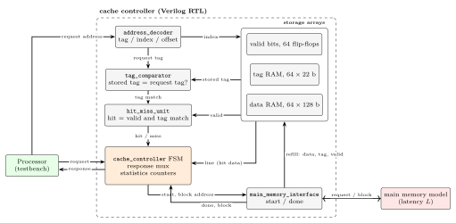
diagrams/block_diagram.tex.How to explain it, left to right. The processor (our testbench) sends a request address. The address decoder gives the index to the three storage arrays (valid bits, tag RAM, data RAM) and the request tag to the tag comparator. The comparator also receives the stored tag from the tag RAM and outputs tag match; the hit/miss unit combines it with the valid bit and tells the FSM hit or miss. On a hit the FSM takes the line from the data RAM and answers. On a miss it sends start + block address to the memory interface, which talks to main memory using request/response; the block comes back as done + block, and refill writes data, tag and valid into the arrays. The dashed box is the Verilog RTL; main memory is a simulation model outside it.
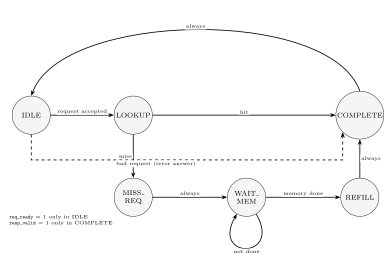
diagrams/controller_fsm.tex.How to explain it. Circles are states, arrows are transitions with their condition. Hit path: IDLE → LOOKUP → COMPLETE → IDLE. Miss path: LOOKUP → MISS_REQ → WAIT_MEM (looping on “not done”) → REFILL → COMPLETE → IDLE. The dashed arrow is the shortcut for a bad request. The note says req_ready is 1 only in IDLE and resp_valid only in COMPLETE, which is what guarantees one response per request.
Three small figures in the report (drawn directly in the LaTeX)
Address fields figure. A bar split into Tag [31:10], Idx [9:4], Off [3:0], labelled “compared with stored tag” and “selects the line”. It is the picture of the formulas in section 2.3.
Cache organization figure. Rows are lines (line 0, 1, 2 … 63). Each row is: V (1 bit) · Tag (22 b) · four words w3 w2 w1 w0 = the 16-byte block. Total stored bits per line = 1 + 22 + 128 = 151; for 64 lines = 9,664 bits.
Request-flow figure (flowchart). Request → aligned and in range? (no → answer with error) → read valid, tag, data of line [index] → valid and tag equal? (yes → HIT: return word [offset]; no → MISS: read block from main memory → refill: write data, tag, valid=1 → return word [offset]). Diamonds are decisions; boxes are actions.
Tool-flow figure. RTL + testbench go into Icarus Verilog, which produces a VCD and a PASS/FAIL log; the VCD feeds GTKWave; the log feeds the Python analysis (CSV, plots); the RTL also goes to Yosys, which gives resource estimates. It is the picture of section 3.
7.2 Waveforms: what each one shows and what to point at
clk clock; req_valid CPU says “I have a request”; req_ready controller says “I can take it” (high only in IDLE); req_addr the address bus (it changes right after acceptance because the testbench deliberately moves it on, to prove the controller kept its own copy); FSM state the current state; mem_req_valid / mem_resp_valid the memory handshake; resp_valid one pulse per answer; resp_hit 1 for hits, stays 0 for misses; resp_rdata the returned word.Cold miss (test 1)
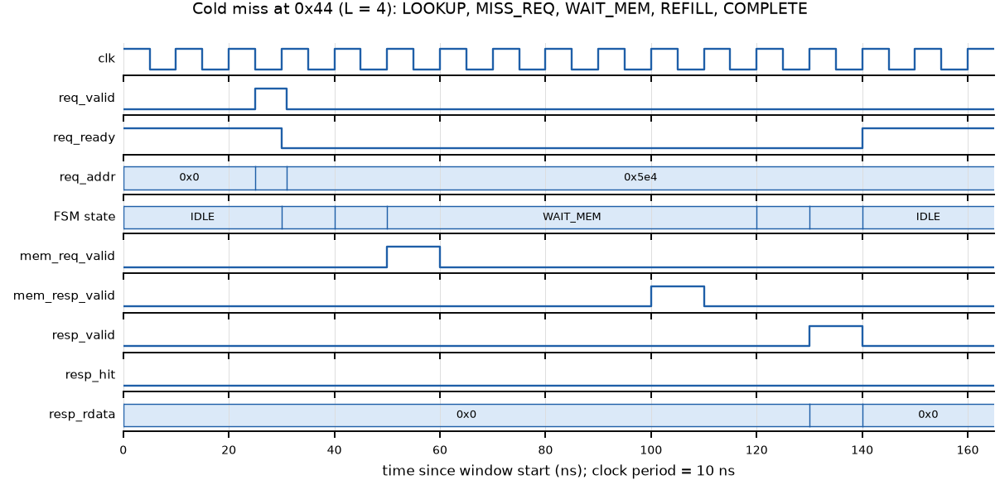
First access to 0x44. Follow the FSM row: IDLE → LOOKUP → MISS_REQ → long WAIT_MEM → REFILL → COMPLETE. mem_req_valid pulses once; later mem_resp_valid pulses once when the block returns; resp_valid comes two cycles after that. Point at: request accepted at about 30 ns, response at about 140 ns = 11 cycles = L + 7 with L = 4. resp_hit stays 0.
Repeated access (test 2)
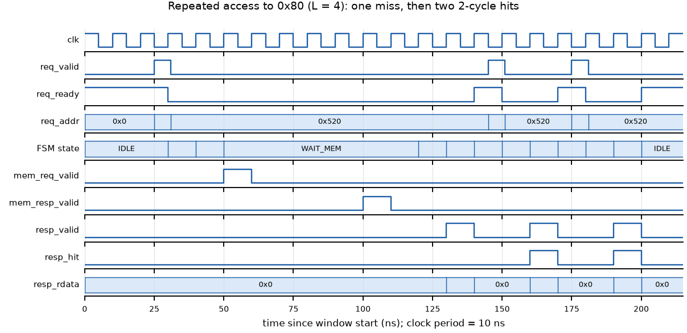
Same address three times: one long miss, then two short accesses. In the short ones the FSM goes only IDLE → LOOKUP → COMPLETE, mem_req_valid never moves, and resp_hit pulses. Each hit takes 2 cycles. This is temporal locality.
Direct-mapped conflict (test 4)
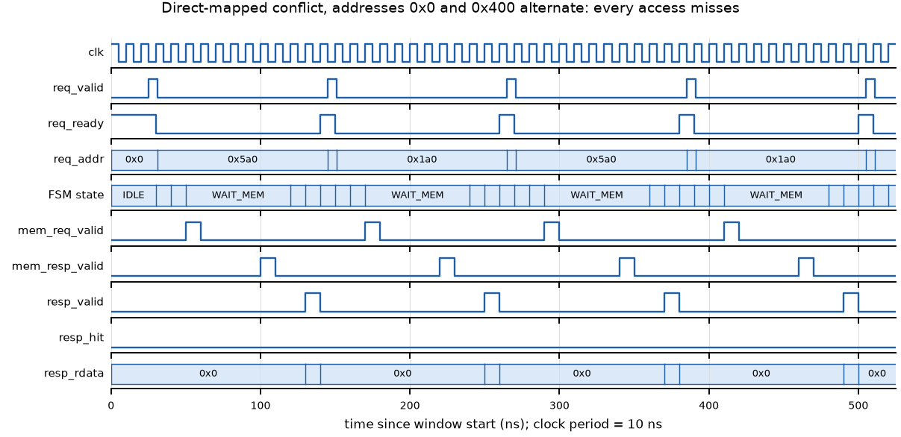
Addresses 0x0 and 0x400 alternate. Every access is a long miss, resp_hit never rises, and the memory request address alternates between the two blocks. Only line 0 is involved; 63 lines sit unused. This is a pure conflict miss: the case a 2-way cache fixes.
Conflict example 100 → 1124 → 100 → 104 (test 12)
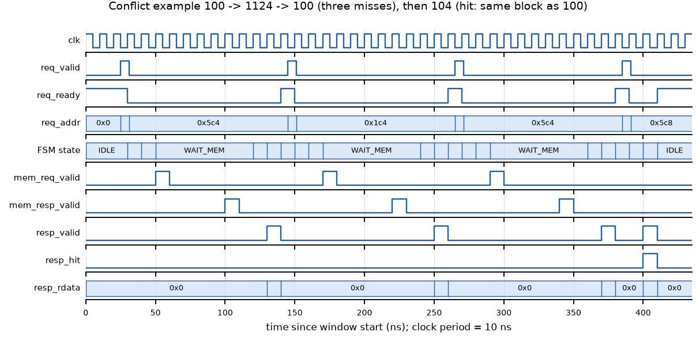
Three long misses (100 and 1124 share line 6 with tags 0 and 1), then a short hit for 104 because it is in the same 16-byte block as 100. Point at the last access: no memory request, 2-cycle response, resp_hit = 1.
Sequential access (test 6)
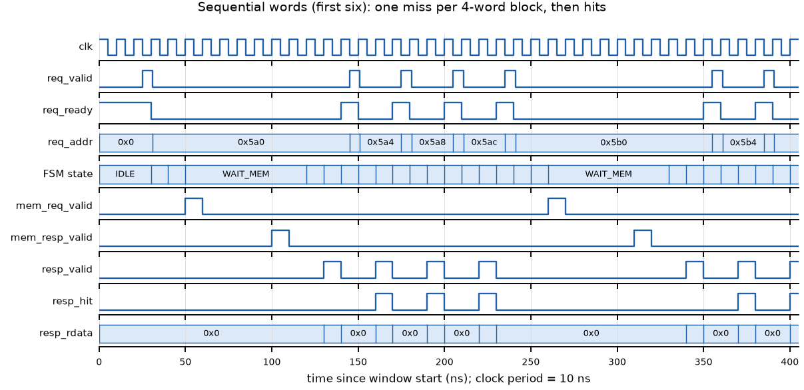
Reading consecutive words: miss, hit, hit, hit, miss, hit … A miss fetches 4 words, so the next 3 are hits. That is a 25% miss rate in steady state, and it is spatial locality.
Effect of memory latency (test 8)
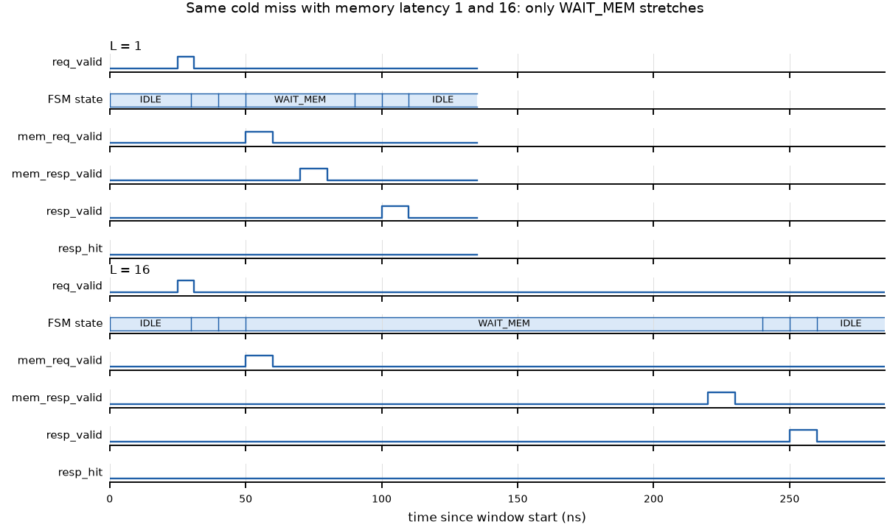
The same cold miss with L = 1 (top) and L = 16 (bottom). Only WAIT_MEM stretches (about 4 cycles vs 19). Every other state keeps its length. Total time is L + 7: 8 cycles vs 23 cycles.
Request handshake (test 9)
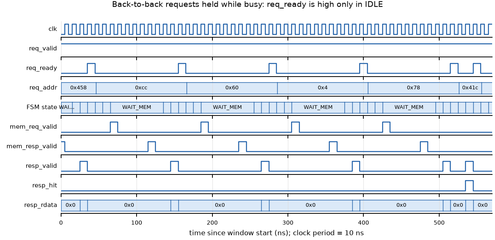
req_valid stays high the whole time (the processor always has the next request ready), but req_ready pulses once per request, only in IDLE. Each pulse accepts exactly one request and each request gets exactly one resp_valid: nothing lost, nothing duplicated.
Reset in the middle of a miss (test 7)
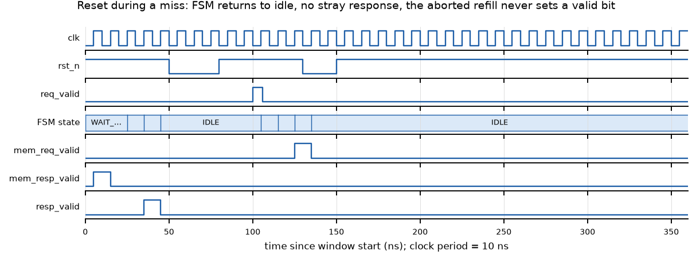
rst_n goes low while a miss is in progress. The FSM and the memory interface return to idle, no stray resp_valid appears, and the aborted refill never sets a valid bit. Afterwards the same address is a clean miss.
Errors (test 11)
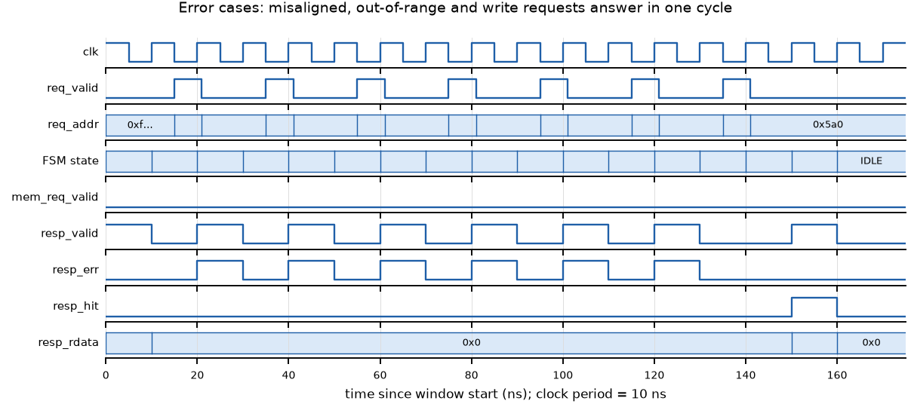
Misaligned, out-of-range and write requests are answered in one cycle with resp_err = 1 and data 0. mem_req_valid never rises: bad requests never reach memory, and they are counted neither as hits nor as misses.
7.3 Charts and tables
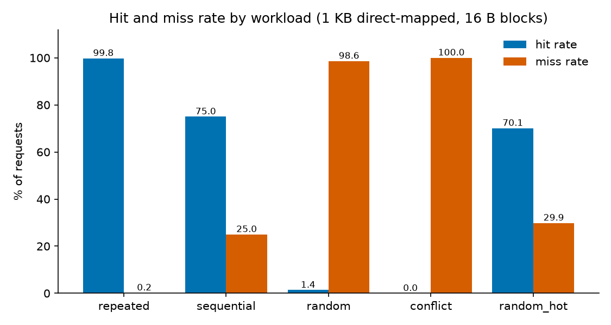
Hit and miss rate for five workloads at L = 4 (blue = hit, orange = miss). repeated 99.8% hits (only 4 compulsory misses); sequential 75% (one miss per 4 words); random_hot 70.1% (80% of accesses in a 512-byte hot region); random 1.4% (a 1 KB cache cannot hold 64 KB, expected about 1/64 = 1.6%); conflict 0%.
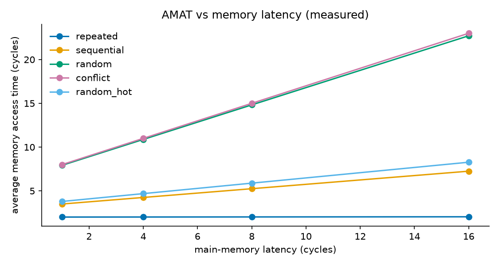
AMAT versus memory latency. Each line is a workload. The slope of a line equals its miss rate: AMAT = 2 + m·(L + 5), so each extra cycle of L adds m cycles. conflict (m = 1) is steepest; repeated (m = 0.2%) is almost flat. The formula and the directly measured average latency agree for every point.
Tables in the report: Table I configuration; FSM-states table; module table; unit-test table; the twelve tests; workloads; results at L = 4; AMAT for L = 1/4/8/16; Yosys estimate; individual contributions.
report/main.tex and the team table in README.md still use [Member 1..4] placeholders. Fill them in and run make report. Also check the reference details against the originals.8. Numbers cheat sheet (all measured)
| Item | Value |
|---|---|
| Cache | 1 KB, 16-byte blocks, 64 lines, direct mapped, read-only |
| Address split | tag 22 · index 6 · offset 4 bits |
| Stored bits | 64 × (1 + 22 + 128) = 9,664 |
| Hit time / miss time / penalty | 2 / L + 7 / L + 5 cycles |
| Memory wait per miss | L + 4 cycles (MISS_REQ + WAIT_MEM) |
| Tests | 4 unit testbenches (40,005 / 5,091 / 8 / 74 checks) + 12 system tests |
| Regression | 16 of 16 runs: latency 1,2,4,8,16; back-pressure 1 and 3; seeds 2,3,4 |
| Bug injection | 12 of 13 caught by system tests; 13th (tag bit 21) is invisible with 64 KB memory and caught by the unit test |
| Synthesis (iCE40-style, flat) | 635 LUT4 · 487 flip-flops · 18 block RAMs (data 16, tag 2) |
| Synthesis (generic, no RAM macro) | 26,162 cells, 10,237 flip-flops (memories become registers) |
| Workload (L = 4) | Requests | Hits | Misses | Hit rate | AMAT |
|---|---|---|---|---|---|
| repeated | 2000 | 1996 | 4 | 99.8% | 2.02 |
| sequential | 4096 | 3072 | 1024 | 75.0% | 4.25 |
| random_hot | 4000 | 2805 | 1195 | 70.1% | 4.69 |
| random | 4000 | 55 | 3945 | 1.4% | 10.88 |
| conflict | 2000 | 0 | 2000 | 0.0% | 11.00 |
9. Viva questions and short answers
What is a direct-mapped cache and why choose it?
Each memory block can go to exactly one line (chosen by the index). Lookup needs one tag comparison and no replacement policy, so it is simple and fast. The price is conflict misses.
How is an address split here?
For a 1 KB cache with 16-byte blocks and 64 lines: offset = bits [3:0], index = [9:4], tag = [31:10] (22 bits). Offset bits [3:2] choose the word.
When is a request a hit?
When the valid bit of line [index] is 1 and the stored tag equals the request tag. An invalid line always misses, even if the stale tag matches.
Why are valid bits flip-flops and not a RAM?
Reset must clear all 64 in one cycle, and a RAM cannot be bulk-cleared. This guarantees no stale data is used after reset.
Walk me through a miss.
LOOKUP finds a miss → MISS_REQ pulses one memory read for the block-aligned address → WAIT_MEM waits for the block → REFILL writes data, tag and valid bit → COMPLETE returns the word. Total L + 7 cycles.
Why is hit time 2 cycles and not 1?
The RAMs are read synchronously: the address is given at the accept edge and the data is ready one cycle later. So the path is accept → LOOKUP → COMPLETE. These cycle counts were measured, not assumed.
What is the miss penalty and why is it L + 5?
It is the extra time of a miss beyond a hit: (L + 7) − 2 = L + 5. Using the full L + 7 in the AMAT formula would count the lookup twice.
How did you prove the design is correct?
Unit tests per module, a 12-test self-checking system testbench with an independent reference memory and a separate behavioural cache model, a memory protocol checker, counter cross-checks, a 16-run regression, and injected bugs to check the tests can fail.
What does the reference model do?
It stores the memory contents in a different structure (words, not bytes) and answers “what is the correct word at this address?”. The monitor compares every cache response with it, so a wrong block, word or byte is caught.
What is mutation / bug injection and what did you find?
We broke the RTL on purpose (ignore valid bit, wrong word select, refill the wrong line, …) and checked the tests fail. 12 of 13 were caught by the system tests; the 13th (ignoring tag bit 21) cannot change any result with a 64 KB memory, and its unit test catches it. An early version missed “refill to the wrong line” because the driver kept the address steady; we now change the address after acceptance.
Why does req_addr change right after a request is accepted in the waveforms?
On purpose: the testbench moves the address away to prove the controller uses its own latched copy.
What does the conflict test show?
Addresses 0 and 1024 share line 0, so they evict each other: every access misses (0% hit rate) while 63 lines are unused. A 2-way cache would hold both.
Why is the sequential miss rate exactly 25%?
Each miss loads a 16-byte block = 4 words; the next 3 words hit. 1 miss in 4 accesses.
What do your synthesis numbers mean? Are they real hardware numbers?
They are Yosys software estimates: 635 LUT4, 487 flip-flops, 18 block RAMs in an iCE40-style mapping. Nothing was placed, routed or run on a board, and there is no timing analysis, so no clock frequency is claimed.
Why does the generic synthesis show 10,237 flip-flops?
With no RAM macro, Yosys turns the data and tag arrays (about 9,600 bits) into flip-flops. With block RAM available (iCE40 flow) only 487 flip-flops remain.
What are the limitations and the future work?
Read-only (write-through with write-allocate planned), one request at a time, synthetic traces, no timing analysis, counters use about half the flip-flops. Future: write policy, 2-way set-associative comparison, non-blocking cache, size/block sweeps, place-and-route timing.
Why Icarus Verilog and Yosys?
Both are free, run on macOS, and cover everything needed without hardware: Icarus simulates and writes VCD files, Yosys synthesizes for cost estimates. Commercial tools would need licenses or a board.
10. Glossary
| Term | Meaning |
|---|---|
| AMAT | Average memory access time = hit time + miss rate × miss penalty. |
| Back-pressure | The receiver (memory) delaying ready so the sender must wait. |
| Block / line | The unit of data moved between memory and cache (16 bytes here). |
| Capacity miss | Miss because the working set is bigger than the cache. |
| Combinational logic | Logic with no memory; the output depends only on the current inputs. |
| Compulsory miss | First access to a block; unavoidable. |
| Conflict miss | Miss because two blocks map to the same line. |
| DUT | Device under test: the module being simulated (dut in the testbench). |
| FSM | Finite-state machine. |
| Flip-flop | One-bit storage element updated on a clock edge. |
| Golden / reference model | An independent model that knows the correct answer. |
| GTKWave | Viewer for VCD waveform files. |
| Handshake | valid/ready protocol: transfer happens when both are 1 at a clock edge. |
| Hit / miss | Data found / not found in the cache. |
| Hit time / miss penalty | Cycles to answer a hit / extra cycles of a miss. |
| Icarus Verilog | Open-source Verilog simulator (iverilog, vvp). |
| Index / tag / offset | The three fields of an address. |
| LUT4 | Four-input look-up table: the basic logic element of an FPGA. |
| Latency (L) | Cycles main memory needs to answer a block request. |
| Locality | Temporal (reuse soon) and spatial (nearby soon) predictability of accesses. |
| Monitor | Testbench code that watches signals and checks them automatically. |
| Mutation testing | Injecting bugs to check the tests detect them. |
| Refill | Writing a fetched block, tag and valid bit into a cache line. |
| Regression | Re-running the whole test suite across many settings. |
| RTL | Register-transfer level: the synthesizable style of hardware description. |
| Synthesis | Turning RTL into basic cells (done by Yosys here). |
| Testbench | Simulation-only Verilog that drives and checks the design. |
| Valid bit | 1 when a cache line holds real data. |
| VCD | Value Change Dump: the text waveform file written by the simulator. |
| Yosys | Open-source synthesis tool. |
11. Troubleshooting
| Problem | Fix |
|---|---|
iverilog: command not found | brew install icarus-verilog, then open a new Terminal. |
yosys: command not found | brew install yosys. |
make perf / waveforms / diagrams fail on Python imports | Create the environment: python3 -m venv .venv && .venv/bin/pip install matplotlib pymupdf. |
make report: IEEEtran.cls not found | tlmgr --usermode install ieeetran. |
| A diagram fails to build | Needs the LaTeX standalone class: tlmgr --usermode install standalone. |
A test prints FAIL[...] | Read the failing line in simulation/logs/tb_cache_lat4.log (it names the test, time and expected vs actual). Open the VCD with make wave TEST=<name> and look at the signals around that time. |
| Cannot see a waveform | make wave TEST=conflict then gtkwave simulation/waveforms/direct_mapped_conflict_lat4.vcd (install with brew install --cask gtkwave). |
Files missing in simulation/ or synth/ | They are generated and not tracked: run make regression, make wave TEST=... or make synth. |
This guide was generated from the repository: code snippets are copied from the actual source files. If you change the code, regenerate or re-read the snippets before presenting.